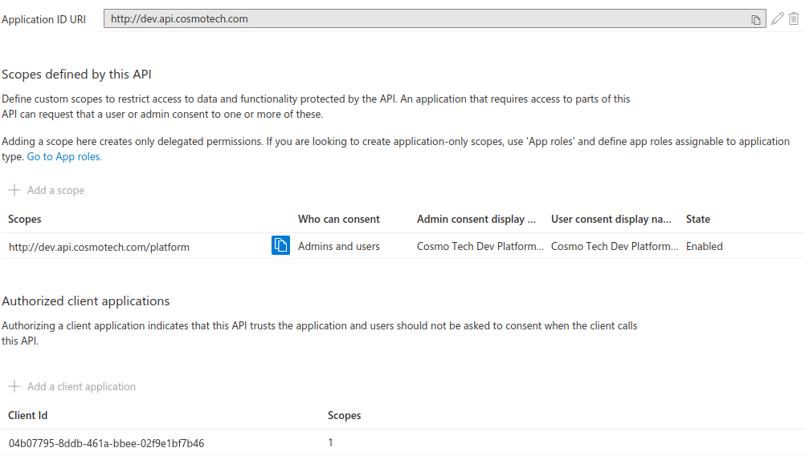

Azure Requirements
Requirements
The following elements are required before you can use Babylon on an Azure subscription
| Requirement | |
|---|---|
| Azure CLI 2.45.0+ |
You need to have a fully set up Cosmo Tech Platform installed on your Azure Tenant.
To help you with the installation you can look at the following course on Allbound
Once you followed those, you should have access to the az command in your terminal of choice, and a platform registered on your Azure tenant.
Allow access to the API using az
AZ CLI is a software developed by Microsoft allowing an easier interaction with Azure from a terminal. Babylon uses it to connect to Azure and use the Active Directory permissions of the user to interact with all the Azure elements.
By default, most of the Azure services recognize AZ CLI interaction, but the Cosmo Tech API requires some settings to allow the user to connect.
Confirmation command
To make sure az is correctly set up for your Cosmo Tech Platform you can use the following command to generate an authentication token.
If the token is generated you are good to go on the following guides, else we will try to look at important setup actions you could try.
To use this command you will need an API Scope, for az you can simply use the URL tied to your api (for example: http://dev.api.cosmotech.com)
az account get-access-token --output json --resource {API Scope}
# {
# "accessToken": "...",
# "expiresOn": "...",
# "subscription": "...",
# "tenant": "...",
# "tokenType": "Bearer"
# }
Most of the time by running the "Generate token" command you will be able to check where issues can happen while trying to interact with your Cosmo Tech API.
Allow az to communicate with your API
AZ CLI being a Microsoft software comes with its own Application ID
So in this case we can easily find the required id and add it to our API
04b07795-8ddb-461a-bbee-02f9e1bf7b46
You can then go to the App Registration of your API on your Azure Tenant and go on the Expose an API page.
There you can see a button Add a client application which will allow you to add the AZ CLI application ID as an authorized client for your api

Now the API will allow connections from the AZ CLI
Ensure your users have rights on the API
To be able to connect to the API, a user requires to have rights to it in Azure Active Directory.
To check the user rights for your API, you can access the Enterprise Application page for your API in the Azure Portal, and check the section Users and groups
On this page you will see all the authorizations for your users and will be able to give roles to Users, Services Principals and Groups.
You just need to make sure that your user has permissions to access your API from here.
The list of roles and their description can be found in the App Registration of your platform under the App roles section